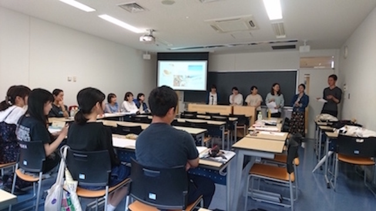

【外国語学部】
〜英語学科〜
佐々木輝美ゼミ
コミュニケーションの効果・影響という視点から、メディアコミュニケーション、対人コミュニケーション、異文化コミュニケーションの領域に共通のコミュニケーション理論を研究します。
また、毎学期の3分間スピーチの実践を通して各自の特徴を生かしたコミュニケーション力の向上を目指します。
Mail
〜ドイツ語学科〜
Ｍ.ビティヒ ゼミ

グローバル化、デジタル化により更に世界は狭くなり、普段から異なる文化的背景の人間に接する機会も増えてきている。
しかし何も努力せず、我々の国際性が身に付くわけではない。皆がともに良好な関係で生活できるための心構えとスキルの習得が必要であり、相互理解力を高めるのも一つの現代におけるチャレンジである。
そこで言語レベルに限られた外国語の勉強だけでは不十分だと思われる。問題意識を持つため幅広い文化的トピックスを挙げ、異文化理解力および異文化能力を高めることが本授業の主な目的である。
Mail
山本淳ゼミ

山本ゼミでは、近現代のドイツ語圏の芸術・文化について研究しています。美術のみを取り扱っているように思われがちですが、映画、建築、演劇、音楽、文学など、ゼミ生の研究分野は様々です。
だから、毎回のゼミの時間で新たな発見が生まれ、幅広く知識を深めることができます。「とんちんかんなことでも言ってみよう！」というゼミスタイルなので、発言もしやすく、発表後の意見交換や議論も熱く展開されます。
合宿や美術館遠足なども楽しみの一つ！「ゼミの時間が楽しみだなぁ」と思える、そんなゼミです。
Mail
ドイツ語学科オリジナルサイト